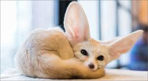

Fun facts:
- Fennec foxes have big ears that can be up to 6 inches long, which is about hlaf of their body size.
- They are nocturnal animal which means they are mostly active at night.
- They are the most smallest species of foxes in the whole world
- These foxes is very light weight, about 2-3.5 pounds
Where do they live?:
- They live in the desert and arid regions of North Afica, including the desert and the sindi and aribian pensulas.
What do they eat?:
They eat:
- Insects
- rodents
- lizards
- birds
- eggs
- fruits
- roots
Also they are omviores so they eat a varid diet and can survie a long period without water.